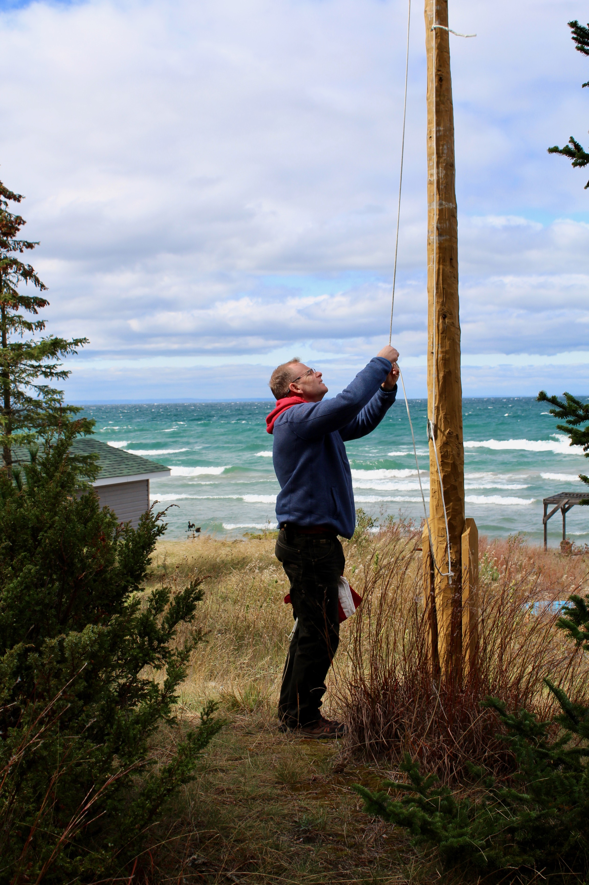
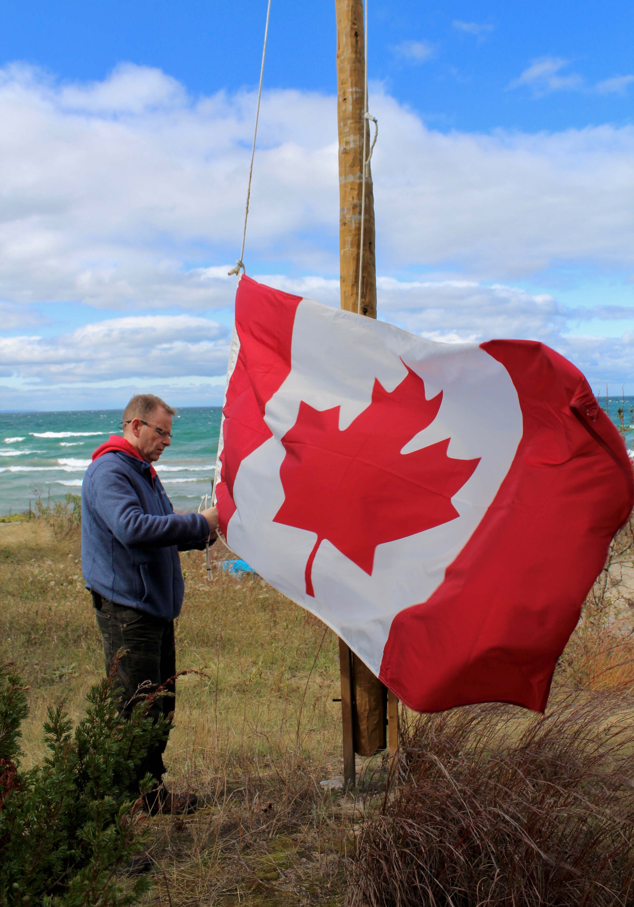
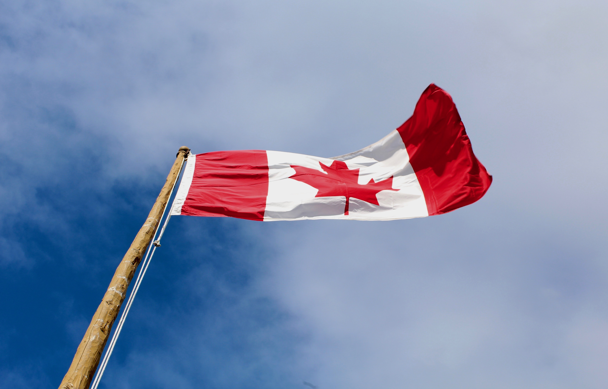

An essential part of many cottage goers is to have the Canadian flag blow in the wind in front of the cottage. It does take a little practise in order to get it up the flag pole, but once it's up there it looks great!
Below are a few pictures showing the proccess of setting up the flag pole:


